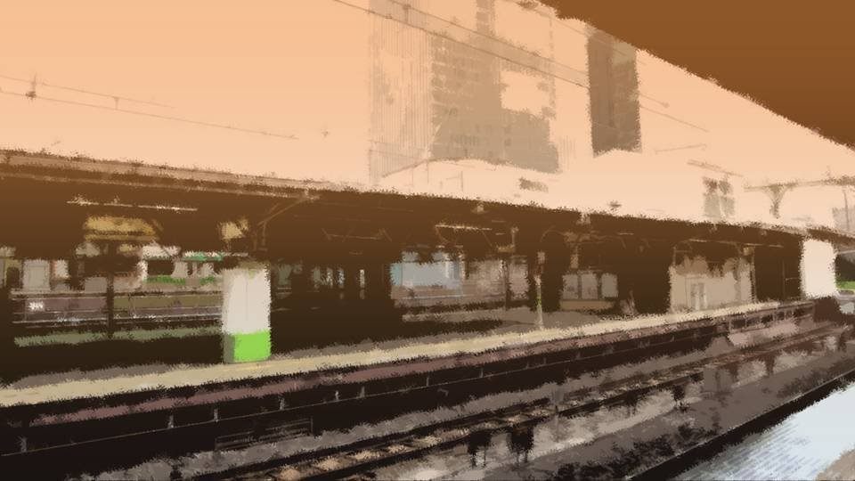
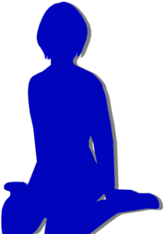

能面

「もしもし？」
「あ、えっと、こちらは古郡良治さんの携帯です。私は元木警察の者で――」
その言葉を聞き、すぐに電話を切った。
最後の望みが絶たれた瞬間だった。
お父さんの携帯に出たのは、なぜか警察の人。
「あ、えっと、こちらは古郡良治さんの携帯です。私は元木警察の者で――」
その言葉を聞き、すぐに電話を切った。
最後の望みが絶たれた瞬間だった。
お父さんの携帯に出たのは、なぜか警察の人。
そうか、やっぱりそうなんだ。
口が震え、目の奥が熱くなる。
私の手にはスマホ、そして春花の冷たい手。
その冷たい手の感触が、私の心に踏ん張りを効かせる。
泣いてはダメだ、今泣いてはダメだ。
絶対に春花の前で泣いてはダメだ。
今だけは……。
口が震え、目の奥が熱くなる。
私の手にはスマホ、そして春花の冷たい手。
その冷たい手の感触が、私の心に踏ん張りを効かせる。
泣いてはダメだ、今泣いてはダメだ。
絶対に春花の前で泣いてはダメだ。
今だけは……。

「なつみ、いいんだぞ？ 今から戻っても。これ、ただの私のわがままだ……」
聞き取りにくく抑揚のない春花の声。
もう、声を張る力もないようだ。
「もう決めたの。私は春花から離れない。大丈夫、何も心配しなくていいから」
私はスマホの電源を切り、春花の手を握りしめた。
聞き取りにくく抑揚のない春花の声。
もう、声を張る力もないようだ。
「もう決めたの。私は春花から離れない。大丈夫、何も心配しなくていいから」
私はスマホの電源を切り、春花の手を握りしめた。
ほどなく電車が来た。
別に行くあてなどない。
電車に乗ることは、私が提案した。きっと警察の目を逃れるには、元木町を離れなければならない。
別に行くあてなどない。
電車に乗ることは、私が提案した。きっと警察の目を逃れるには、元木町を離れなければならない。

元木町には生活に必要な施設は最低限そろっているから、電車に乗る人はあまり多くない。
私たちが乗った車両には、誰もいない。
私たちがどこへ行こうが、目撃されることもないだろう。
私たちが乗った車両には、誰もいない。
私たちがどこへ行こうが、目撃されることもないだろう。
春花はなかなか私の隣に座ろうとしない。
ただ立ったまま顔をうつむける。
「ほら、春花」
春花の手を引き、座らせる。
相変わらず、春花は顔をうつむけたまま――。
ただ立ったまま顔をうつむける。
「ほら、春花」
春花の手を引き、座らせる。
相変わらず、春花は顔をうつむけたまま――。
日が傾いてきて、車内が赤くなっている。
景色はすぐに山の風景に変わり、桜の花が夕日に照らされ始めた。
どこまで行こうとか、考えていない。
春花が安心できる所なら、どこへでも。
景色はすぐに山の風景に変わり、桜の花が夕日に照らされ始めた。
どこまで行こうとか、考えていない。
春花が安心できる所なら、どこへでも。
「なつみ……私……」
春花の手を強く握るが、春花は握り返すどころか、手に力を感じられない。
「春花、話したくなければ、話さなくてもいいよ。 でも、話してくれても、私は何も驚かない。春花を嫌いになることもないから」
「…………」
春花は何も話さない。
代わりに春花の目から、大粒の涙がこぼれてきた。
春花の手を強く握るが、春花は握り返すどころか、手に力を感じられない。
「春花、話したくなければ、話さなくてもいいよ。 でも、話してくれても、私は何も驚かない。春花を嫌いになることもないから」
「…………」
春花は何も話さない。
代わりに春花の目から、大粒の涙がこぼれてきた。
「ご……ごめんなさい……！
なつみ……！ ごめんなさい！」



私はなんとなく勘付いていた。
警察と聞いて怯えた春花。
すぐに1人になれという五島。
警察署にいるお母さん。
そして、あの夢。
想像したくはないが、もしかすると――。
警察と聞いて怯えた春花。
すぐに1人になれという五島。
警察署にいるお母さん。
そして、あの夢。
想像したくはないが、もしかすると――。
事件で死んだのが、私のお父さんかもって思った時は気が動転した。
すぐに警察に行かないといけないのは分かっている。
でも、目の前で怯える春花を、どうしても1人にできなかった。
生まれた時からずっと一緒だった春花を―― 泣いて苦しんでる春花を見捨てることなんて。
すぐに警察に行かないといけないのは分かっている。
でも、目の前で怯える春花を、どうしても1人にできなかった。
生まれた時からずっと一緒だった春花を―― 泣いて苦しんでる春花を見捨てることなんて。
親不孝と思われてもいい。
バカだと思われてもいい。
私が今、危険な状況でもいい。
春花を安心させられるなら、それでいい。
バカだと思われてもいい。
私が今、危険な状況でもいい。
春花を安心させられるなら、それでいい。
「なつみ……お前のお父さん……」
そうか、やっぱり私のお父さんの話をするんだ。
もしここで私が狼狽したらどうなるだろうか。
きっと春花はもっと心を乱し、発狂し――。
そうか、やっぱり私のお父さんの話をするんだ。
もしここで私が狼狽したらどうなるだろうか。
きっと春花はもっと心を乱し、発狂し――。
こんなときでも私は自分の心に鞭打って、平静を保つしかない。
我慢するしかない。
私が我慢すればいいだけ。
我慢するしかない。
私が我慢すればいいだけ。
「大丈夫だよ春花。私は何があっても味方だから」
私がそう言うと、また春花の目から涙がこぼれてきた。
何の抵抗もなく春花を擁護した自分に驚いた。
私のお父さん、殺されたのに。
春花がお父さんを殺したのに。
私がそう言うと、また春花の目から涙がこぼれてきた。
何の抵抗もなく春花を擁護した自分に驚いた。
私のお父さん、殺されたのに。
春花がお父さんを殺したのに。
きっと、何か深い事情があったんだ。
私はもう、春花と逃げると決めていた。
私はもう、春花と逃げると決めていた。
「今は……なつみが危ない……。
私と一緒にいるなつみが危ない……」
「うん、そうかもしれないね……。 でも、春花を1人にはしないよ」
「なつみ……お前…… 本当にバカだよ……」
「うん、そうかもしれないね……。 でもやっぱり、春花を1人にはしないよ」
これが殺人犯の言う言葉なのだろうか。
そもそも、あんな犯行、春花にできたのだろうか。
「うん、そうかもしれないね……。 でも、春花を1人にはしないよ」
「なつみ……お前…… 本当にバカだよ……」
「うん、そうかもしれないね……。 でもやっぱり、春花を1人にはしないよ」
これが殺人犯の言う言葉なのだろうか。
そもそも、あんな犯行、春花にできたのだろうか。
「春花、正直に言うね。
私、どうしても春花がお父さんを殺したとは思えない。
大人の男を呼び出して、皮を剥いで、中央公園に生きたまま置いていくなんて、春花の力じゃ無理だよ。
何か勘違いしてない？」
「…………」
春花のすすり泣く声が徐々に小さくなっていく。
少しは安心できたのだろうか。
「…………」
春花のすすり泣く声が徐々に小さくなっていく。
少しは安心できたのだろうか。
「なつみ……。今から私が言うこと、驚かないで聞いてほしい。
多分……信じられないと思う」
「分かったよ」
「分かったよ」

電車がトンネルに入り、車内が一気に暗くなる。
節電のためなのか、不調なのか、車内に明かりは点らない。
節電のためなのか、不調なのか、車内に明かりは点らない。
「私……
魔女なんだ……」
「え？」
「人を殺す魔女だよ……」
あまりにも予想外の発言。
さすがにここまで突飛なことを言われるとは……。
「え？」
「人を殺す魔女だよ……」
あまりにも予想外の発言。
さすがにここまで突飛なことを言われるとは……。
「魔女……って？」
「私、人を呪い殺せるんだ」
返答に困ってしまった。
そんなバカなこと……。
「私、人を呪い殺せるんだ」
返答に困ってしまった。
そんなバカなこと……。
「春花は、お父さんを呪い殺したの？」
「紙人形に、名前を書いて、色々とまじないをかける。 すると、その人は四月八日に死ぬ……」
「そ、そうなんだ。春花は紙人形にお父さんの名前を書いて、呪いをかけたんだね」
「多分……」
「紙人形に、名前を書いて、色々とまじないをかける。 すると、その人は四月八日に死ぬ……」
「そ、そうなんだ。春花は紙人形にお父さんの名前を書いて、呪いをかけたんだね」
「多分……」
多分って……。なぜここまできてあいまいな返事をするのか。
「どうして、多分なのかな？」
「覚えてないんだ、紙人形を作ったこと。 今朝起きたら、机の上にあった。だから怖くなって、すぐにしまった。 捨てたりしたら、お母さんに見つかるかもしれないし」
「どうして、多分なのかな？」
「覚えてないんだ、紙人形を作ったこと。 今朝起きたら、机の上にあった。だから怖くなって、すぐにしまった。 捨てたりしたら、お母さんに見つかるかもしれないし」
「そっか、春花もやりたくてやったんじゃないんだね。
でも呪われた人はどうやって死ぬの？ まさか自然に皮がはがれて死ぬわけじゃないよね？」
「………… 死神……」
「………… 死神……」
「え？」
「呪いが成功すると、死神が相手のところに現れる。死神はありとあらゆる方法で、呪った相手をむごたらしく殺す」
「呪いが成功すると、死神が相手のところに現れる。死神はありとあらゆる方法で、呪った相手をむごたらしく殺す」

「ねえ春花、どうして自分は魔女だなんて思うの？」
質問を変えてみる。
五島ほどうまくはできないだろうけど、少しずつ話を聞き出して、春花が犯人ではないことを証明できるよう、推理を重ねてみなくてはならない。
と、春花が突然顔を上げてこちらを凝視する。
質問を変えてみる。
五島ほどうまくはできないだろうけど、少しずつ話を聞き出して、春花が犯人ではないことを証明できるよう、推理を重ねてみなくてはならない。
と、春花が突然顔を上げてこちらを凝視する。
今まで6人殺した。
冗談を言っている顔ではない。
春花はこれまで人を呪い殺したことがある。
「そう……なんだ……」
自分の声が震えているのに気づく。
そして春花は続けて言った。
春花はこれまで人を呪い殺したことがある。
「そう……なんだ……」
自分の声が震えているのに気づく。
そして春花は続けて言った。
お前も今日死ぬ
さすがに顔が引きつってしまった。
これはつまり、春花が私に呪いをかけた。
これはつまり、春花が私に呪いをかけた。
「は、ははは……！
そうだよな、なつみ！ 自分を殺そうとしている人間がそばにいるんだからな！
やっぱりそういう顔でなくちゃな！」
こんな顔の春花は初めて見た。
充血した眼を見開き、にいっと笑っている。
例えるならそう…… 魔女の顔だ。
こんな顔の春花は初めて見た。
充血した眼を見開き、にいっと笑っている。
例えるならそう…… 魔女の顔だ。
「お前ほんとバカだよなあ……！ 私が殺人鬼だと分かってて一緒に来たんだろ？
私のこと信頼してここまで来たんだろ？
どれだけ頭の中お花畑なんだよ……！
はははははへははははへははは……！」
「ち、違う！ 春花はそんなことしてない！」
「ち、違う！ 春花はそんなことしてない！」
「へっはははははは！
さあどうするんだ！？
こんな電車に乗ってたら逃げ場なんてないぞ！
なつみ！
お前は死ぬ！
今日死ぬんだよ……！！
ハハヘハハハハヒアハハ……！」
こんなの春花じゃない！
これが、魔女になった春花……？
こんなの春花じゃない！
これが、魔女になった春花……？
ダメだ！ 押されるんじゃない！
もう春花も混乱して錯乱して、どうしたらいいか分からなくなっているだけだ！
絶対に1歩も退いてはダメだ！
もう春花も混乱して錯乱して、どうしたらいいか分からなくなっているだけだ！
絶対に1歩も退いてはダメだ！
「春花は私を殺したりしない……！
だって……春花は生まれた時からの親友だもん……！」
一瞬、かりそめの友情という文言が浮かんだ。
それにこんな安っぽい台詞が通じるなんて思っていない。
一瞬、かりそめの友情という文言が浮かんだ。
それにこんな安っぽい台詞が通じるなんて思っていない。
しかし、ここで屈してしまっては絶対にダメだ。
春花は「魔女」の顔のまま、じっとこちらを見続ける。
そんなものに、私は負けない。
春花は「魔女」の顔のまま、じっとこちらを見続ける。
そんなものに、私は負けない。
が、
泣きはらした春花の目からまた、涙が流れてきた。
泣きはらした春花の目からまた、涙が流れてきた。
「なつみぃ……。
死んじゃやだよ……。死なないでくれよ……」
春花は悲壮な声を上げ、また涙をこぼす。
これが何よりの証拠だ。
春花に殺意なんてない。あるのは魔女だという妄想と、紙人形だけだ。
春花は悲壮な声を上げ、また涙をこぼす。
これが何よりの証拠だ。
春花に殺意なんてない。あるのは魔女だという妄想と、紙人形だけだ。
「春花……落ち着いて」
私は春花の背中をさすろうと手を伸ばす。
「触るな！」
私は春花の背中をさすろうと手を伸ばす。
「触るな！」

「なつみに慰められる資格なんてないよ……」
ダメだ！ 今、絶対に春花の主張を認めてはいけないのだ。
ダメだ！ 今、絶対に春花の主張を認めてはいけないのだ。
「私は春花と一緒にいる。春花はお父さんを殺してなんかいない。私を殺すこともない」
「でも……でも、今朝実際に――」
「バカにしないで。そんなまやかし、私が取りはらってあげる」
「私は魔女だ！ どうして私と一緒に居るんだよ！」
「一緒にいてって言ったのは春花でしょ！？」
「でも……でも、今朝実際に――」
「バカにしないで。そんなまやかし、私が取りはらってあげる」
「私は魔女だ！ どうして私と一緒に居るんだよ！」
「一緒にいてって言ったのは春花でしょ！？」
「ああそうだよ！ なつみをどこか遠くに行かせれば大丈夫と思ったんだよ！
でも私が一緒だったら結局ダメだって気づいたんだよ！」
「もう言ってることがめちゃくちゃ！ どうせ春花の呪いだって、めちゃくちゃでいい加減な話なんでしょ！」
「いい加減じゃない！ 今まで私が呪いをかけたやつらはみんな死んだんだ！」
「もう言ってることがめちゃくちゃ！ どうせ春花の呪いだって、めちゃくちゃでいい加減な話なんでしょ！」
「いい加減じゃない！ 今まで私が呪いをかけたやつらはみんな死んだんだ！」

「そんな話信じるわけないでしょ！」
「黙れ黙れ黙れ！ お前に私の何が分かるんだよ！ もうお前なんか友達じゃない！」
「黙れ黙れ黙れ！ お前に私の何が分かるんだよ！ もうお前なんか友達じゃない！」
私の平手が春花の頬をたたきつける。
春花の髪留めが取れ、前髪がはらりと顔を覆う。
初めて人をたたいた瞬間だった。
手が春花の涙で濡れ、想像していたよりも手が痛む。
春花の髪留めが取れ、前髪がはらりと顔を覆う。
初めて人をたたいた瞬間だった。
手が春花の涙で濡れ、想像していたよりも手が痛む。
「春花……何？ 今の発言。
友達じゃないって？」
「…………」
「ほら、言ってよ」
「ごめん……」
「…………」
「ほら、言ってよ」
「ごめん……」
「もう一度言えって言ってるでしょ！
もう友達じゃないって！？」
「違うんだよ……！ 本気でそんな……！」
「違うんだよ……！ 本気でそんな……！」
「は、あきれた、勢いでそんなこと……。春花は何がしたいの？ どうするつもりなの？」
「分からない……分からないんだよ……！」
「じゃあ私はどうしたらいいの？」
「ごめん……」
「分からない……分からないんだよ……！」
「じゃあ私はどうしたらいいの？」
「ごめん……」
「何よ……。
何よ！ 泣いて謝るくせに、私に死んでほしくないなんて言うくせに、ただそれだけなの！？
どうして私を助けるって言ってくれないの？」
「助ける……？」
「逆の立場だったら、何があっても絶対に春花を守ってみせる。 それとも友達じゃないって言葉、本気だったの？」
「そ、そんなはずないだろ！ 私はなつみを……！」
「助ける……？」
「逆の立場だったら、何があっても絶対に春花を守ってみせる。 それとも友達じゃないって言葉、本気だったの？」
「そ、そんなはずないだろ！ 私はなつみを……！」
「だったら私を助けてよ！ 春花がかけた呪いから私を守ってよ！」
「なつみを…… 助ける……」
「聞こえない。もっとはっきり言って」
「私が……死神からなつみを助ける」
その言葉を聞き、ようやく肩の力を抜くことができた。
「なつみを…… 助ける……」
「聞こえない。もっとはっきり言って」
「私が……死神からなつみを助ける」
その言葉を聞き、ようやく肩の力を抜くことができた。
「うん、死神が現れたら、私を助けて。
お願い、今私が頼れるのは、春花しかいないの」
「わかった……」
「ありがとう。でもやっぱり私は春花の呪いを信じられない。 だけど、6人殺した『死神』はいるのかもしれない。 それって、どんなやつなの？」
私の質問に、春花は1度大きく深呼吸する。
「わかった……」
「ありがとう。でもやっぱり私は春花の呪いを信じられない。 だけど、6人殺した『死神』はいるのかもしれない。 それって、どんなやつなの？」
私の質問に、春花は1度大きく深呼吸する。
「死神は、呪った相手を必ず殺す。とてもむごたらしく、ひどい殺し方で……。
なつみも知ってるだろ？ 女ケ沢市事件のこと……」
「うん……知ってるよ」
「うん……知ってるよ」
「私が呪いをかけると、決まって四月八日に女ケ沢市事件が発生する。
どんな例外もなく、呪いをかけると四月八日に私が呪った相手は必ず死ぬんだ……」
「まさか女ケ沢市事件の犯人って……その死神なの？」
「その通りだ……。だからあんな人間にはできないような殺し方ができる……。 私は魔女で死神を呼び出したから、死神の正体を知っている」
そうか、春花の理屈なら、春花は主犯で死神が実行犯ってことか。
「まさか女ケ沢市事件の犯人って……その死神なの？」
「その通りだ……。だからあんな人間にはできないような殺し方ができる……。 私は魔女で死神を呼び出したから、死神の正体を知っている」
そうか、春花の理屈なら、春花は主犯で死神が実行犯ってことか。
春花は死神の正体――つまり凶悪犯の正体を知っていながらずっと黙っていた。
なぜ警察は突き止められなかったのだろうか。
どうせ死神だって中の人は人間だろうし、神隠し的な手法だって何らかのトリックに違いない。
もしかしたら春花は、その手口についても知っているのかも。
なぜ警察は突き止められなかったのだろうか。
どうせ死神だって中の人は人間だろうし、神隠し的な手法だって何らかのトリックに違いない。
もしかしたら春花は、その手口についても知っているのかも。
「死神の正体、なつみだけに言っておく。きっとなつみの前に現れるだろうし」
「うん」
「死神の正体は…… 私のお父さんだ」
「うん」
「死神の正体は…… 私のお父さんだ」
え？ 今警笛でよく聞こえなかったけど……。
「ごめん春花、よく聞こえなかった……」
「私のお父さんだよ……！」
春花のお父さんが死神？
海外にいるはずの春花のお父さんが？
「私のお父さんだよ……！」
春花のお父さんが死神？
海外にいるはずの春花のお父さんが？
「春花のお父さん、この日のためにわざわざ帰国したの？」
「今まで黙ってて悪かったけど、私のお父さんはずっと前に亡くなった。 私が呪いをかけると、お父さんの命日である四月八日に現れて、願いを―― 私が呪った相手を殺してくれる。 死んだ人間だからこそ、あんな神隠し的な犯行が可能なんだ」
「今まで黙ってて悪かったけど、私のお父さんはずっと前に亡くなった。 私が呪いをかけると、お父さんの命日である四月八日に現れて、願いを―― 私が呪った相手を殺してくれる。 死んだ人間だからこそ、あんな神隠し的な犯行が可能なんだ」
春花のお父さんは亡くなっていた。
大ごとであるはずの告白すら、今となっては情報の一部分でしかない。
にしても、死んだ人間が犯人だなんて、にわかには信じられない。
大ごとであるはずの告白すら、今となっては情報の一部分でしかない。
にしても、死んだ人間が犯人だなんて、にわかには信じられない。
「死神になった春花のお父さんには会ったことあるの？」
「私も死神のお父さんには会ったことないから、格好はよく分からない……。 でも……」
「私も死神のお父さんには会ったことないから、格好はよく分からない……。 でも……」
「でも……女ケ沢市に住んでいた時、風のうわさで聞いたんだ……。
ほんのわずかだけ犯行の瞬間を目撃した人がいたらしいんだけど……」
ということは、少なくとも見えない何かに殺された、というわけではないのだろう。
「お父さんは…… 鉈とメイス、つまり金属の棍棒で殺すらしい。 そして……」
ということは、少なくとも見えない何かに殺された、というわけではないのだろう。
「お父さんは…… 鉈とメイス、つまり金属の棍棒で殺すらしい。 そして……」
「能面を着けている」
「能面？ あの、お面のこと？」
春花は黙ってうなずく。
「能面？ あの、お面のこと？」
春花は黙ってうなずく。

死神と聞けば、鎌に骸骨というイメージだが……。
鉈にメイス……そして能面。
死神のイメージとは遠いが、『死神』を騙る犯人の趣味など今はどうでもいい。
風のうわさレベルなら、それが正確な情報とも言い難いが、何も死神の情報がない今はこんな小さなことでも大いに有意だ。
鉈にメイス……そして能面。
死神のイメージとは遠いが、『死神』を騙る犯人の趣味など今はどうでもいい。
風のうわさレベルなら、それが正確な情報とも言い難いが、何も死神の情報がない今はこんな小さなことでも大いに有意だ。
「そっか……それなら分かりやすいね。
春花、もし現れたら、守ってね」
「なつみは何物にも代えられない親友。 私が……絶対に助ける。命に代えても、私が絶対に助けるから。 絶対になつみを守り抜いてみせるから」
「ありがとう。でも…… 私は春花と一緒に生き残りたいよ」
「…………」
「なつみは何物にも代えられない親友。 私が……絶対に助ける。命に代えても、私が絶対に助けるから。 絶対になつみを守り抜いてみせるから」
「ありがとう。でも…… 私は春花と一緒に生き残りたいよ」
「…………」
それきり、私たちの間に会話は生まれなかった。
Read ✓ Next in this arc →